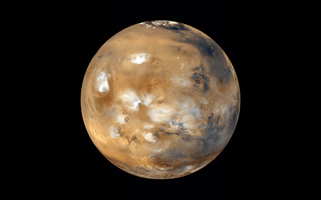
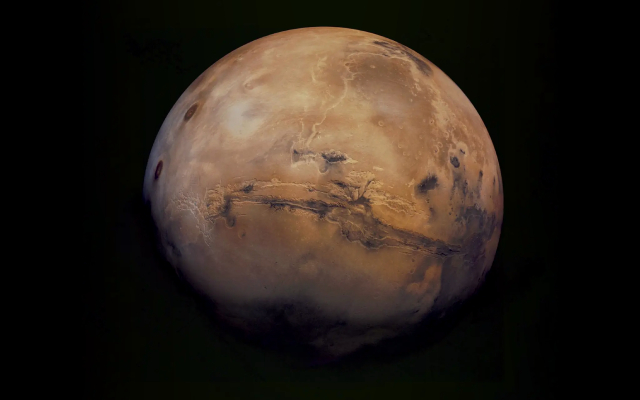
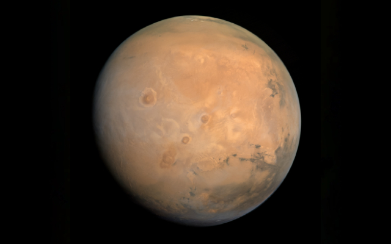

Mars
Mars is the fourth planet from the Sun. The surface of Mars is orange-red because it is covered in iron(III) oxide dust
Information

| Property | Value |
|---|---|
| Mass (1024 kg) | 0.64169 |
| Volume (1010 km3) | 16.312 |
| Mean Density (kg/m3) | 3934 |
| Surface Area | 144.4 million km2 |
| Average Temperature | ~210 K (-63 C) |
| Wind Speeds | 2-7 m/s (summer), 5-10 m/s (fall), 17-30 m/s (dust storm) |
About Mars


Mars is the fourth planet from the Sun. It is one of the four terrestrial planets within our Solar System, meaning it is characterised by a solid surface and composed of silicate rocks and metals. The surface of Mars is coloured a fusion of orange and red; this is because it is covered in iron oxide dust. It is the second smallest planet in our Solar System after Mercury, with a diameter of 6,779 km (or 4,212 miles) compared to 4,879.4 km (~3,032 miles). Mars has two natural satellites—Phobos and Deimos. They are both small, and irregular in shape.